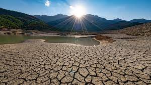
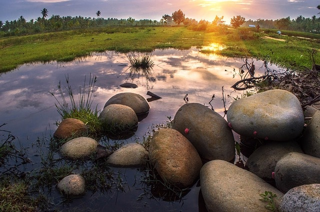
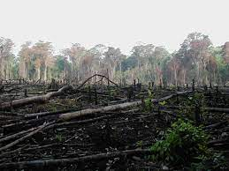
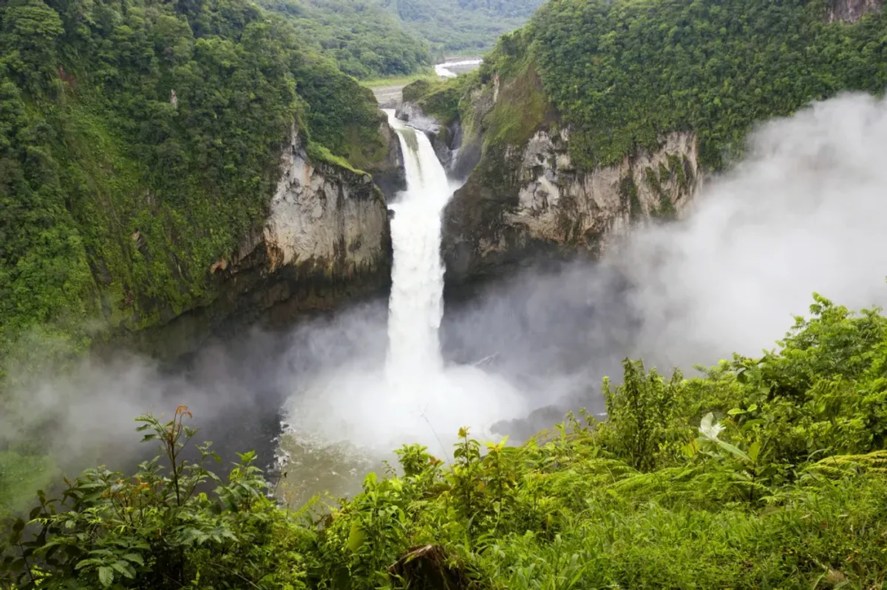

SDG goal 15:
Life on Land
Life on land
We should conserve and protect nature and forests because they provide us with life. Goal 15 focuses specifically on managing
forests sustainably, halting and reversing land and natural habitat degradation, successfully combating desertification and
stopping biodiversity loss.
Aims of SDG Goal 15
Combating Desertification


Desertification is land degradation in (semi)arid and (sub)humid areas due to factors such as climate change, human
activities, etc. Land degradation means the reduction or lessening of the productivity of a land. The World Day to Combat
Desertification and Drought is observed every year to promote public awareness of international efforts to combat desertification.
Halting and Reversing Natural Habitat Degradation


To stop and reverse the degradation of ecosystems and natural habitats globally, the UN launched a Decade on Ecosystem
Restoration, from 2021 to 2030. This coordinated and organized response to the loss, destruction and degradation of habitats will
build political capacity to restore human's relation with nature.
Stopping Biodiversity Loss


Biodiversity loss refers to the decline or disappearance of biological diversity, meaning the variety of living things on the
planet, its different levels of biological organisation and their respective genetic variability, as well as the natural patterns
present in ecosystems and habitats.